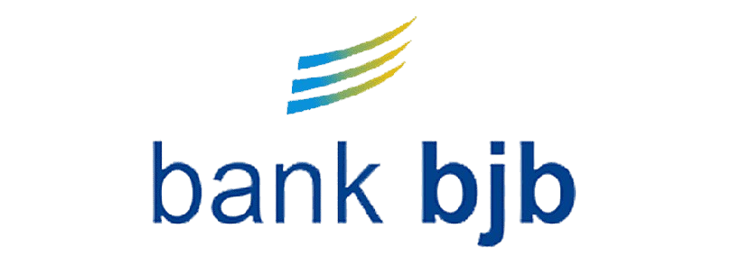

Partnered With



Pesan dan sambutan hangat dari Rektor Universitas Ma'soem
Selamat datang di Universitas Ma’soem, kampus yang menjunjung tinggi nilai-nilai Islam, kejujuran, dan profesionalisme dalam pendidikan. Kami berkomitmen untuk membentuk generasi yang berilmu, berakhlak, dan berdaya saing tinggi di era global ini.
Melalui sinergi antara pendidikan akademik dan pembinaan karakter, Universitas Ma’soem berupaya menciptakan lingkungan belajar yang kondusif, inspiratif, dan berorientasi pada pengembangan potensi mahasiswa secara menyeluruh.
Wassalamu’alaikum Warahmatullahi Wabarakatuh.
- Rektor Universitas Ma’soem